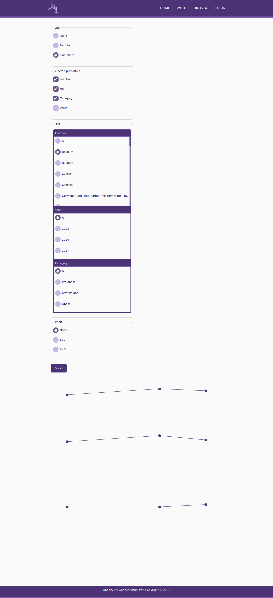

Obesity Prevalence Visualizer
IEEE Requirements Specification
Authors
- Mihăeș Antonio
- Stoleriu Daniel
Introduction
Purpose
The aim of this system requirements specification document is to provide an in-depth description of the tool Obesity Prevalence Visualizer. This document will explain the features and the purpose of this software.
Intended Audience and Reading Suggestions
The audience of this document are other developers who may be interested in contributing to this tool or basing their work on it. This document may also be of use to users of this software.
Product Scope
Obesity Prevalence Visualizer is a website that allows users to view statistics related to the body mass index. These statistics are gathered from external sources. This tool allows users to visualize this data in various different forms and to export them in different file formats. Users may also make use of a REST API.
References
Overall Description
Product Perspective
Obesity Prevalence Visualizer is a website that offers statistics about the body mass index in various countries and regions around the world. These statistics can be visualized as tables, line charts and bar charts. The two sources of the data are Eurostat and the World Health Organization.
Product Functions
-
Home page
- Provides a short description of the website.
- Describes obesity and what the body mass index is
- Presents the various formats in which statistics can be visualized showing line charts, bar charts and tables.
-
Administration
- An administrator can authenticate in order to gain access to the administration panel. The user is logged in for the duration of the session.
- Visualize the raw data from the database in the form of separate table for data from Eurostat and from WHO.
- Insert a new row by having a text field for each column in the table.
- Clear all data from a table.
- Remove a single row from a table.
- Download and insert data from Eurostat and WHO.
- Change their account information (e-mail and password).
-
WHO and Eurostat data
- Select from the navigation bar or the home page one of these two (WHO or Eurostat) separate pages to show.
- Select between a table, a bar chart or a line chart visualizer.
- Select which properties to show.
- Select the order, if the user has selected a table and a bar chart.
- Select using a filter for each property, selected or not, to show only data with a particular value.
- Export to CSV if the user has selected a table or export to SVG or PNG if the user has selected a bar chart or a line chart.
- Update the page without refreshing when the user presses the submit button. Every time the user presses submit a new history entry is made in the browser.
-
Table visualizer
- Select which columns are shown.
- Select the ordering of the rows.
- Select only the rows which have one particular value on a certain column.
-
Bar chart visualizer
- Select which attributes are shown for each bar.
- Select the ordering of the bars.
- Select data which has one particular attribute.
-
Line chart
- The x axis represents the years, and the y axis the body mass index.
- Select data which has one particular attribute.
- Select which columns are shown when a user hovers or clicks on a point.
User Classes and Characteristics
- Regular users who do not need any kind of authentication and want to view the statistics offered on the site.
- The administrator who needs authentication and want to update or remove the data stored.
Operating Environment
This website can be hosted on any kind of operating system that can run PHP: Unix-like operating systems, Windows and macOS. The website can be accessed from any device, including mobile ones, that has a modern web browser.
Design and Implementation Constraints
This software is developed using PHP, HTML and CSS. The data is stored in a SQLite database. The project is structured using the model-view-controller design pattern.
Assumptions and Dependencies
The site depends on PHP 8 and a web server such as Apache or nginx.
External Interface Requirements
User Interfaces
-
Home page
-
Bar chart
-
Line chart
 -
Table
-
Login page
-
Administration page
-
Administration table
Software Interfaces
This tool requires on the server side PHP 8 with the Curl and multi-byte string extensions enables. SQLite version 3 is also required to store the data. Gnuplot is also required for the export functionality to work for SVG and PNG.
Communication Interfaces
The web pages are transferred over HTTP/HTTPS. For authentication HTTPS is preferred in order prevent attacks. The data gathered from Eurostat and the World Health Organization is gathered through their respective REST API which server JSON documents. This application's REST API also uses JSON transferred over HTTP and uses JSON Web Tokens for actions which need authentication.
System Features
Product presentation
On the home page the scope of this product is presented explaining the features. There is also an explanation of the body mass index is and its categories. To showcase the features there are example line charts, bar charts and tables with data gathered from the database to illustrate the ways in which data can be visualized. The charts and tables on this page cannot be configured.
Statistics visualization
Two separate pages can be accessed to visualize data from Eurostat and WHO.
On each of these pages the user has the option to select from a bar chart, line chart or table as a type of representation.
The user can also select which properties are shown (year, value, location, etc.). This data will be shown in a bar chart when a user hovers or clicks a bar. In the case of a line chart, the data will be shown when the user hovers or clicks a point. For a table these properties represent the columns which are shown.
The user can select for each column in what order the values are shown, either ascending or descending. They can also specify how this ordering is done (e.g. order after location, then year if the location is the same). These options are only available for bar charts and tables.
The user can also filter the data so only statistics with a certain value are shown (e.g. to show only data from 2014). This filtering applies for all three types of visualizations.
The user can optionally export to a particular format: CSV for tables, SVG or PNG for line charts and bar charts.
Authentication
The user can enter their e-mail and password. After pressing the login button the server will validate their request and if successful they can access the administration panel and they are logged in for the duration of the session.
Administration
The user has the ability to change their e-mail and password (there are two fields for the password, because the user has to confirm it). Before changing this information the user has to insert their (old) password.
The user has two links which can take him to two different pages to change the data from Eurostat and WHO. Each of these pages will have a paginated table showing all the rows from the table in the database. Each of these rows has a button that allows the user to remove that particular row. Above the table there are text fields corresponding to each column in the table that allow the user to insert a new row. There are also buttons for clearing all the data from the table and for downloading and inserting the data from Eurostat and WHO.
Other Nonfunctional Requirements
Performance Requirements
In terms of memory this tool requires at least 512M of RAM to be able to parse and insert the JSON file provided by the World Health Organization which has a size of a few tens of megabytes.
Safety Requirements
The data can be safely redownloaded from the the sources in case of a system failure.
Security Requirements
No data is stored or gathered from ordinary users, so there are no system requirements for them. The administrator needs to insert their authentication information so HTTPS would be a requirement in case the administration panel is used.
Software Quality Attributes
Besides the various way to visualize the data, the site is responsive and can be used on devices with small screens such as tablets or smartphones. The home page is useful for showing the users the features of the tool.